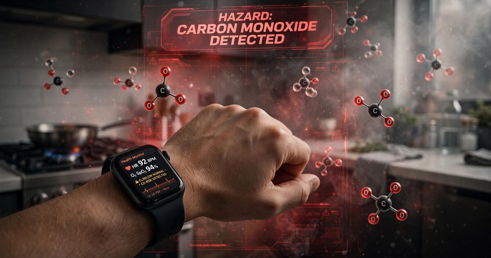

System and Method for Early Detection of Carbon Monoxide Exposure Using Anomalous Cardiovascular Compensation Pattern Recognition from Consumer Wrist-Worn Photoplethysmographic Wearables

Abstract
Disclosed is a system and method for detecting early-stage carbon monoxide (CO) exposure using consumer wrist-worn photoplethysmographic (PPG) wearable devices without dedicated CO gas sensors. The system exploits a fundamental limitation of two-wavelength pulse oximetry: standard SpO2 measurements cannot distinguish oxyhemoglobin (O2Hb) from carboxyhemoglobin (COHb), causing readings to remain falsely stable or elevated during CO poisoning even as the blood's actual oxygen-carrying capacity degrades. Rather than attempting direct COHb measurement, the system detects CO exposure indirectly by recognizing the characteristic physiological compensation pattern that emerges when the body responds to tissue hypoxia while SpO2 readings remain deceptively normal. An on-device anomaly detection model continuously monitors the constellation of SpO2 trajectory, heart rate trend, heart rate variability (HRV) metrics, respiratory rate estimation, and PPG pulse waveform morphology features, comparing the observed multi-dimensional vital sign state against the wearer's personalized physiological baseline. When the system identifies the "false stability signature" of CO exposure (stable or rising SpO2 concurrent with unexplained compensatory tachycardia, HRV depression, and characteristic PPG amplitude and dicrotic notch changes), it triggers a graduated alert hierarchy from user notification through emergency contact escalation. Multi-device spatial correlation across wearers in the same indoor environment increases detection confidence and reduces false positives from exercise, emotional stress, or illness.
Field of the Invention
This invention relates to environmental health monitoring using consumer wearable devices, specifically to methods for inferring the presence of carbon monoxide in indoor air by detecting the anomalous cardiovascular compensation response pattern that CO poisoning produces in photoplethysmographic and derived vital sign data, without requiring dedicated gas-sensing hardware.
Background
Carbon monoxide poisoning remains a leading cause of unintentional poisoning death in the United States. According to the CDC's surveillance report covering 2005-2018, non-fire-related CO poisoning accounts for approximately 430 deaths, 14,365 hospitalizations, and over 100,000 emergency department visits annually. The USAFacts analysis of 2022 CDC provisional data found 624 accidental CO deaths that year, an 85.7% increase from a decade earlier, driven largely by portable generator use during power outages from increasingly frequent natural disasters. Globally, the Global Burden of Disease Study 2021 estimated 28,900 unintentional CO poisoning deaths worldwide.
CO is colorless, odorless, and tasteless. Its lethality stems from hemoglobin's affinity for CO, which is approximately 200-250 times greater than for oxygen. At low-to-moderate exposure levels (COHb 10-30%), symptoms are nonspecific: headache, dizziness, nausea, and fatigue, often mistaken for flu or food poisoning. Many victims are asleep when exposure begins, and the cognitive impairment caused by early CO poisoning reduces the likelihood of self-rescue.
Current CO detection falls into two categories, each with critical gaps:
- Electrochemical CO alarms: Residential CO detectors (required by law in 27 US states) use electrochemical cells with a minimum alarm threshold of 70 ppm for 60-189 minutes under UL 2034. They do not alarm at low chronic exposures (10-50 ppm over hours) that still produce dangerous COHb levels, particularly in children, elderly, and those with cardiovascular disease. CPSC data indicates that 73% of CO fatalities in homes with detectors occurred because the detector was absent from the room of exposure, had dead batteries, or had been disabled by occupants annoyed by false alarms from cooking.
- Pulse CO-oximetry: Devices like the Masimo Rainbow SET Radical-7 use 7+ wavelengths of light to directly measure SpCO (carboxyhemoglobin saturation). Barker et al. (2011, Anesthesia & Analgesia) validated accuracy in healthy volunteers. However, a 2022 meta-analysis by Papin et al. presented at EUSEM found pulse CO-oximetry achieved only 77% sensitivity and 83% specificity across 11 studies and over 2,000 patients, with a 23% false negative rate deemed "too high for reliably triaging patients." These devices cost $3,000-8,000, are used only in clinical settings, and are not available in consumer wearables.
Standard two-wavelength pulse oximeters (the type in every consumer smartwatch) are well-documented to be "CO-blind." Barker and Tremper (1987, Anesthesiology) demonstrated in a landmark canine study that as COHb rose from 0 to 75%, SpO2 remained above 90% even when actual O2Hb fell below 30%. The SpO2 reading approximates the sum of COHb + O2Hb, not O2Hb alone. Hampson (1998, Annals of Emergency Medicine) confirmed this "pulse oximetry gap" in 16 human CO poisoning patients: SpO2 never fell below 96% despite COHb levels as high as 44%, with the gap closely tracking COHb concentration (R² = 0.90).
The gap in the art is a method that works around the fundamental two-wavelength SpO2 limitation by using the physiological consequences of CO poisoning rather than its optical signature. No existing system uses the pattern of compensatory cardiovascular responses captured by consumer wearable PPG sensors to infer CO exposure. The disclosed system requires no additional hardware beyond what is already present in consumer smartwatches: a PPG sensor (green and/or red/IR LEDs with photodiode), an accelerometer, and on-device compute.
Detailed Description
1. The False Stability Signature of Carbon Monoxide Exposure
The physiological basis of this invention rests on a specific, well-characterized cascade that occurs during CO exposure. As inhaled CO binds to hemoglobin and reduces oxygen-carrying capacity, the body initiates compensatory mechanisms to maintain tissue oxygen delivery. These mechanisms produce a distinctive multi-parameter vital sign pattern that is detectable by consumer PPG wearables:
- SpO2 remains falsely stable or elevated. Because two-wavelength pulse oximetry reads COHb as O2Hb, SpO2 typically stays at 95-100% even at dangerous COHb levels. This is not a flaw to be corrected but a signal to be exploited: a stable SpO2 reading during physiological distress is itself abnormal.
- Compensatory tachycardia develops. As tissue hypoxia worsens, the cardiovascular system increases cardiac output. Heart rate rises 10-30 bpm above baseline, initially gradual then accelerating. This tachycardia occurs without physical exertion, emotional stress, or postural change.
- Heart rate variability decreases. CO-induced sympathetic activation reduces parasympathetic (vagal) tone. Time-domain HRV metrics (SDNN, RMSSD, pNN50) decrease, and frequency-domain analysis shows suppression of the high-frequency (HF, 0.15-0.4 Hz) component with relative preservation or increase of the low-frequency (LF, 0.04-0.15 Hz) component, elevating the LF/HF ratio. Gold et al. (2000, Circulation) demonstrated that ambient pollutant exposure, including CO, produces measurable HRV depression detectable in 25-minute Holter recordings from community-dwelling older adults.
- Respiratory rate increases. Chemoreceptor stimulation by tissue hypoxia drives increased ventilatory effort. PPG-derived respiratory rate estimation (via baseline modulation of PPG amplitude at respiratory frequencies) can detect this tachypnea.
- PPG waveform morphology changes. CO-induced vasodilation (via smooth muscle relaxation and nitric oxide pathway modulation) alters peripheral vascular tone, producing measurable changes in the PPG pulse waveform: reduced dicrotic notch amplitude (reflecting decreased arterial compliance feedback), increased pulse amplitude (peripheral vasodilation), and decreased pulse transit time variability. These morphology features are distinct from those produced by exercise (which increases systemic vascular resistance) or fever (which produces gradual rather than acute vasodilation).
The combination of these five signals produces a physiological fingerprint that is highly specific to CO exposure. Any individual signal can arise from benign causes, but the specific constellation of stable SpO2 + unexplained tachycardia + HRV depression + tachypnea + vasodilatory PPG morphology changes, occurring simultaneously and without correlating physical activity (confirmed by accelerometer), represents a pattern whose probability of non-CO causation is extremely low.
2. PPG Signal Acquisition and Feature Extraction
The system operates on PPG signals from consumer wrist-worn devices with the following sensor configurations:
- Green LED PPG (495-570 nm): Primary heart rate and HRV source. High signal-to-noise ratio at the wrist. Sampled at 25-100 Hz depending on device. Used for beat-to-beat interval extraction, HRV computation, and waveform morphology analysis.
- Red LED (620-750 nm) + Infrared LED (850-950 nm): SpO2 measurement pair. The ratio of AC/DC components at red vs. IR wavelengths (the R-ratio) determines SpO2 via the standard Beer-Lambert calibration curve. The disclosed system monitors the R-ratio trajectory rather than the derived SpO2 value, because the R-ratio contains information about the hemoglobin absorption spectrum that is compressed by SpO2 calibration.
- Accelerometer (3-axis, ≥25 Hz): Motion artifact rejection and activity state classification. Essential for distinguishing CO-induced tachycardia from exercise-induced tachycardia.
From these raw signals, the system extracts the following feature vector at 60-second intervals:
- SpO2 and R-ratio trajectory: Current SpO2, SpO2 slope over 5/15/60-minute windows, R-ratio mean and variance, R-ratio first derivative.
- Heart rate features: Instantaneous HR, HR slope over 5/15/60-minute windows, HR deviation from personal circadian baseline (indexed by time of day and activity level).
- HRV features (computed over 5-minute windows): SDNN, RMSSD, pNN50 (time domain); LF power, HF power, LF/HF ratio, total power (frequency domain, computed via Lomb-Scargle periodogram to handle irregular beat intervals); SD1/SD2 ratio from Poincaré plot analysis; sample entropy (SampEn) as a nonlinear complexity measure.
- Respiratory rate: Estimated from PPG amplitude modulation at 0.15-0.5 Hz via the RIAV (respiratory-induced amplitude variation), RIFV (respiratory-induced frequency variation), and RIIV (respiratory-induced intensity variation) methods. Consensus respiratory rate from three estimators reduces artifacts.
- PPG morphology features: Systolic peak amplitude (normalized), dicrotic notch depth (ratio of notch minimum to systolic peak), diastolic peak amplitude, pulse width at half-maximum, crest time (systolic upstroke duration), augmentation index (ratio of second to first systolic peak), pulse area ratio (systolic area / diastolic area). All features computed per-beat and aggregated as 60-second median and interquartile range.
- Activity context: Accelerometer-derived activity state (sedentary/light/moderate/vigorous), postural state (supine/seated/standing, estimated from wrist orientation), and minutes since last activity transition.
3. Personalized Baseline Model
The system maintains a rolling personalized physiological baseline for each wearer, constructed from the preceding 14 days of data. The baseline model captures the wearer's normal vital sign ranges as a function of three contextual variables: time of day (circadian variation), activity level (from accelerometer), and postural state. The baseline is stored as a set of conditional probability distributions: P(HR | time_of_day, activity_level, posture), P(HRV_metrics | time_of_day, activity_level), P(SpO2 | time_of_day), and P(PPG_morphology | time_of_day, activity_level).
The baseline adapts over days to capture individual variation. A wearer with a resting HR of 55 bpm produces different anomaly thresholds than one with a resting HR of 75 bpm. Seasonal adaptation (rolling 14-day window) accommodates gradual fitness changes, medication effects, and altitude acclimatization.
4. Anomaly Detection Model
The on-device detection model operates in two stages:
Stage 1: Individual Channel Anomaly Scoring. Each vital sign channel is scored independently against its personalized baseline distribution. The anomaly score for each channel is the Mahalanobis distance of the current observation from the baseline distribution conditioned on the current activity and circadian context. Channels scored independently: HR_anomaly, HRV_anomaly (composite of RMSSD, LF/HF, SampEn), SpO2_anomaly, RespRate_anomaly, PPG_morphology_anomaly (composite of dicrotic notch depth, augmentation index, pulse area ratio).
Stage 2: Multi-Channel Constellation Matching. A lightweight gradient-boosted decision tree (GBDT) classifier (≤50 trees, max depth 4, model size < 200 KB) takes the five channel anomaly scores plus their rates of change as input features (15-dimensional feature vector) and outputs a CO exposure probability. The model is trained on synthetic data generated from a physiological simulator calibrated against published CO exposure dose-response curves:
- Positive training data: Simulated vital sign trajectories for COHb accumulation profiles at various CO concentrations (50-400 ppm) and exposure durations (15 minutes to 8 hours), with variation in individual physiological parameters (resting HR, HRV, vascular compliance) drawn from population distributions. The simulator uses the Coburn-Forster-Kane (CFK) equation to model COHb kinetics and published dose-response relationships for cardiovascular compensation.
- Negative training data: Real-world vital sign trajectories from consumer wearable datasets during exercise, sleep, alcohol consumption, fever/illness, emotional stress, caffeine intake, and hot bath/sauna exposure. Each of these conditions produces partial overlap with the CO signature in individual channels but differs in the multi-channel constellation pattern.
The model outputs a continuous probability score (0-1) updated every 60 seconds. A Bayesian temporal accumulator integrates sequential probability scores, with a prior that increases with exposure duration (reflecting the physiological reality that COHb accumulation is progressive and does not spontaneously resolve without removal from the CO source).
5. Multi-Device Spatial Correlation
When two or more devices running the system occupy the same indoor environment (determined by Bluetooth proximity beaconing, shared Wi-Fi BSSID, or user-configured household grouping), the system enables a spatial correlation layer that dramatically reduces false positives. If multiple wearers in the same household simultaneously exhibit elevated CO exposure probability scores, the system assigns a household-level alert confidence that is substantially higher than any individual score would warrant. The probability that two unrelated individuals in the same location simultaneously develop compensatory tachycardia with stable SpO2 and HRV depression for non-CO reasons is extremely low.
The spatial correlation operates via a lightweight local network protocol (BLE mesh or local Wi-Fi) that shares only anonymized anomaly scores (not raw vital signs) between devices in the same household group. No data leaves the local network for this correlation step.
6. Graduated Alert Hierarchy
The alert system escalates through five levels based on the accumulated CO exposure probability score and exposure duration estimate:
- Level 0 (Monitoring): Probability < 0.3. Normal operation, no user notification. System logs data for baseline refinement.
- Level 1 (Awareness): Probability 0.3-0.5, single device. Subtle notification: "Your vital signs show an unusual pattern. Make sure your space is well-ventilated." No CO mention to avoid panic from false positives.
- Level 2 (Advisory): Probability 0.5-0.7, or probability > 0.3 with multi-device spatial correlation. Direct notification: "Possible carbon monoxide exposure detected. Check your CO alarm and move to fresh air if you feel unwell." Vibration + audible alert.
- Level 3 (Warning): Probability 0.7-0.9, or Level 2 sustained > 15 minutes. Persistent alarm with snooze-only dismissal. Automated message to designated emergency contacts with device location.
- Level 4 (Emergency): Probability > 0.9, or Level 3 sustained > 10 minutes with no user interaction (possible incapacitation). Automated 911 dispatch via FCC E911 with GPS coordinates and structured data payload indicating suspected CO poisoning, number of affected individuals (from spatial correlation), and estimated exposure duration.
7. Confound Discrimination
Several benign conditions produce vital sign patterns that partially overlap with the CO exposure signature. The system discriminates these through specific feature combinations:
- Exercise: Produces tachycardia and HRV changes but is accompanied by sustained accelerometer activity (> 0.5g RMS), SpO2 that may transiently dip (not remain falsely stable), and PPG morphology changes consistent with increased systemic vascular resistance (opposite to CO-induced vasodilation). The activity context channel suppresses CO scoring during and for 30 minutes after moderate-to-vigorous activity.
- Alcohol consumption: Produces vasodilation and HRV changes but typically occurs with preserved or slightly elevated SpO2, characteristic PPG waveform changes (flushing-related skin perfusion increase), and a temporal pattern (gradual onset over 30-60 minutes, peak 1-2 hours post-consumption) that differs from CO accumulation kinetics.
- Illness/fever: Produces tachycardia and HRV depression but develops over hours-to-days (not the 30-120 minute timeframe of acute CO exposure), typically shows genuine SpO2 depression (not false stability), and exhibits elevated skin temperature detectable by wearable thermistors if present.
- Sleep apnea: Produces cyclical SpO2 desaturations and HR changes but with a characteristic periodic pattern (30-90 second cycles) distinct from the monotonic progression of CO poisoning, and only during sleep (identified by accelerometer quiescence and circadian context).
- Emotional stress/panic: Produces tachycardia and HRV depression but with preserved SpO2 dynamics (stress does not produce the "false stability" SpO2 pattern), different HRV spectral profile (increased VLF power), and typically self-resolving within 5-15 minutes.
8. Figures Description
- Figure 1: Multi-channel time-series comparison showing the "false stability signature" during simulated CO exposure: SpO2 remaining at 98-99% while HR rises from 68 to 95 bpm, RMSSD drops from 42 ms to 18 ms, respiratory rate increases from 14 to 22 breaths/min, and dicrotic notch depth decreases by 35%. Contrast panel shows the same metrics during moderate exercise, where SpO2 dips to 94-96% and accelerometer activity is elevated.
- Figure 2: System architecture diagram showing PPG signal acquisition, feature extraction pipeline, personalized baseline model, dual-stage anomaly detection, multi-device spatial correlation via BLE mesh, and graduated alert hierarchy.
- Figure 3: PPG pulse waveform morphology comparison: (a) normal baseline waveform with labeled systolic peak, dicrotic notch, and diastolic peak; (b) CO exposure waveform showing increased pulse amplitude, reduced dicrotic notch depth, and decreased crest time; (c) exercise waveform showing reduced pulse amplitude and preserved dicrotic notch; (d) alcohol-related vasodilation showing increased amplitude but preserved HRV characteristics.
- Figure 4: ROC curves for the multi-channel GBDT classifier at four CO concentration levels (50, 100, 200, 400 ppm), showing performance on simulated data with realistic confounders. Expected AUC range: 0.85-0.95 for concentrations ≥ 100 ppm after 60 minutes of exposure.
- Figure 5: Multi-device spatial correlation scenario: two wearers in the same household showing correlated anomaly score escalation, with the household-level confidence exceeding the individual alert threshold 12 minutes before either individual device would alert alone.
Claims
- A system for detecting carbon monoxide exposure using a consumer wrist-worn wearable device, comprising: a photoplethysmographic sensor with at least two wavelengths of light; an accelerometer for motion and activity context determination; and an on-device processor running an anomaly detection model; wherein the system detects CO exposure by recognizing the concurrent presence of falsely stable or elevated SpO2 readings, unexplained compensatory tachycardia, depressed heart rate variability, and characteristic PPG pulse waveform morphology changes consistent with CO-induced vasodilation, without requiring dedicated gas-sensing hardware or multi-wavelength CO-oximetry beyond the standard two-wavelength SpO2 configuration.
- The system of claim 1, wherein the anomaly detection model compares observed vital sign features against a personalized physiological baseline constructed from the wearer's preceding 14 days of data, conditioned on time of day, activity level, and postural state, such that detection thresholds adapt to individual cardiovascular characteristics.
- The system of claim 1, wherein PPG pulse waveform morphology features used for CO exposure detection include dicrotic notch depth relative to systolic peak amplitude, augmentation index, pulse width at half-maximum, crest time, and the ratio of systolic-to-diastolic pulse area, and wherein CO-induced vasodilation produces a characteristic combination of increased pulse amplitude with decreased dicrotic notch depth that is distinguishable from exercise-induced hemodynamic changes.
- The system of claim 1, further comprising a multi-device spatial correlation module that detects correlated anomaly scores across two or more wearable devices in the same indoor environment, determined by Bluetooth proximity, shared Wi-Fi network, or user-configured household grouping, and assigns a household-level CO exposure confidence that exceeds the confidence achievable from any single device.
- The system of claim 1, wherein the detection model discriminates CO exposure from confounding conditions including exercise, alcohol consumption, illness, sleep apnea, and emotional stress by analyzing the temporal dynamics, accelerometer context, SpO2 behavior, and multi-channel constellation pattern specific to each condition.
- A method for detecting carbon monoxide exposure in an indoor environment, comprising: continuously acquiring photoplethysmographic signals and accelerometer data from a wrist-worn wearable device; extracting a multi-dimensional feature vector including SpO2 trajectory, heart rate trend, heart rate variability metrics, respiratory rate, and PPG pulse waveform morphology features; comparing the observed feature vector against a personalized physiological baseline; computing a CO exposure probability score using a multi-channel anomaly detection model trained on simulated CO exposure dose-response data and real-world confound data; and triggering graduated alerts when the probability score exceeds configurable thresholds.
- The method of claim 6, wherein the CO exposure probability score is computed by a dual-stage process: first scoring individual vital sign channels independently against personalized baseline distributions to produce per-channel Mahalanobis distance anomaly scores, then combining the channel scores and their rates of change through a gradient-boosted decision tree classifier trained on synthetic data generated from the Coburn-Forster-Kane equation for COHb kinetics.
- The method of claim 6, further comprising a Bayesian temporal accumulator that integrates sequential CO exposure probability scores over time, with a prior that increases with estimated exposure duration, reflecting the progressive and non-self-resolving nature of COHb accumulation.
- The system of claim 1, wherein the graduated alert hierarchy includes five levels from passive monitoring through automated emergency dispatch, with escalation gated by probability thresholds, exposure duration, multi-device spatial correlation status, and user interaction responsiveness, and wherein the highest alert level triggers automated 911 dispatch when the wearer appears incapacitated.
- The method of claim 6, wherein positive training data for the anomaly detection model is generated from a physiological simulator that models COHb accumulation via the Coburn-Forster-Kane equation and cardiovascular compensation via published dose-response relationships, with variation in individual physiological parameters drawn from population distributions, and negative training data comprises real-world wearable recordings during exercise, sleep, alcohol consumption, illness, emotional stress, and other conditions producing partial vital sign overlap with CO exposure.
Prior Art References
- Shin et al. (2022), Annals of Emergency Medicine — CDC surveillance: 430 deaths, 14,365 hospitalizations, 100,000+ ED visits annually from non-fire CO poisoning in the US (2005-2018)
- USAFacts (2024) — 624 accidental CO deaths in 2022, 85.7% increase over decade, driven by portable generator use
- GBD 2021, Scientific Reports (2024) — 28,900 global CO poisoning deaths in 2021
- Barker and Tremper (1987), Anesthesiology — Landmark study: SpO2 remained >90% while O2Hb fell below 30% at 75% COHb in canine model
- Hampson (1998), Annals of Emergency Medicine — Pulse oximetry gap: SpO2 never fell below 96% at COHb levels up to 44% in human patients (R² = 0.90)
- Barker et al. (2011), Anesthesia & Analgesia — Masimo Radical-7 pulse CO-oximeter validation in healthy volunteers with elevated COHb
- Papin et al. (2022), EUSEM Congress — Meta-analysis: pulse CO-oximetry 77% sensitivity, 83% specificity, 23% false negative rate across 2,000+ patients
- Gold et al. (2000), Circulation — Ambient pollutant exposure including CO produces measurable HRV depression in community-dwelling adults
- Castaneda et al. (2018), Sensors — Review of PPG signal features for cardiovascular monitoring: waveform morphology analysis methods
- US7899507B2 — Masimo multi-wavelength pulse CO-oximetry patent (7+ wavelengths for SpCO measurement)
- Coburn, Forster, Kane equation — Mathematical model of COHb kinetics as a function of inspired CO, ventilation rate, and hemoglobin concentration
- CPSC Carbon Monoxide Information Center — Consumer product CO death statistics and residential alarm efficacy data
- TensorFlow Lite — On-device ML runtime for mobile and embedded deployment